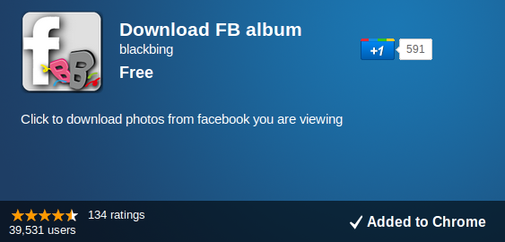
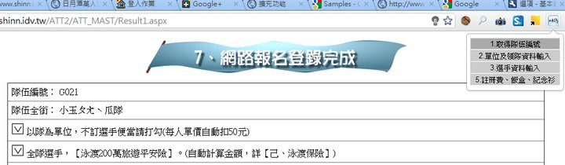

<-
3
->
Notes
Help
Back
Loading...
Web Developer不可忽視的
瀏覽器擴充元件
Bingo in 2011.10
Press
→
key to continue.
Web APP
網站不是網站而已，web app的時代已經來臨。
越來越複雜的互動功能儼然是更先進的應用程式。
chrome Web Store:
https://chrome.google.com/webstore
瀏覽器限制
安全性限制：瀏覽器無法直接存取使用者的系統。
剪貼簿
檔案存取
通知
HTML5：突破以往瀏覽器的限制，然而安全性是還是最大議題。
為何需要Extension
因為酷阿～我擁有別人沒有的功能！
網站功能如何賺錢？「安裝」付費的擴充元件
我希望每個網頁都有這個功能!
跨網站的功能，Mashup的結合，例如：
Cloud Save
,
Publish post sync for Google+, facebook
網站及應用程式曝光的管道!
app store發光發熱，developer奮起吧!
突破瀏覽器限制!
利用extension api完成不可能的任務!
Web Developer, What you need is "Creative", and ......
Practice !
目標瀏覽器
Source:
StatCounter Global Stats - Browser Market Share
Browser Extension
Google Chrome Extensions
http://code.google.com/chrome/extensions/overview.html
Firefox addons
https://addons.mozilla.org/zh-TW/developers/
IE Browser Extensions
http://msdn.microsoft.com/en-us/library/aa753587(v=vs.85).aspx
Opera Extensions
http://www.opera.com/addons/extensions/develop/
Extension Web Store
Idea 的產生，往往來自於
意外
來自女友的脫口而出的一句話：「我想下載朋友的相簿所有照片」
parse 縮圖，替換原圖字元
Chrome Extension是個好工具。
Download FB album
誕生。

幫助你生活更加的
美好
2011橫渡日月潭報名要填一大堆資料，包含20幾名隊員個人基本資料。
為了搶前五百名有毛巾，以及工程師的尊嚴。
「報名日月潭自動完成」擴充元件

成功搶到第七名!
簡化日常瑣碎的流程才是真男人
讓我們來看看Chrome Extension的架構
The End
Thank you
blackbing@gmail.com